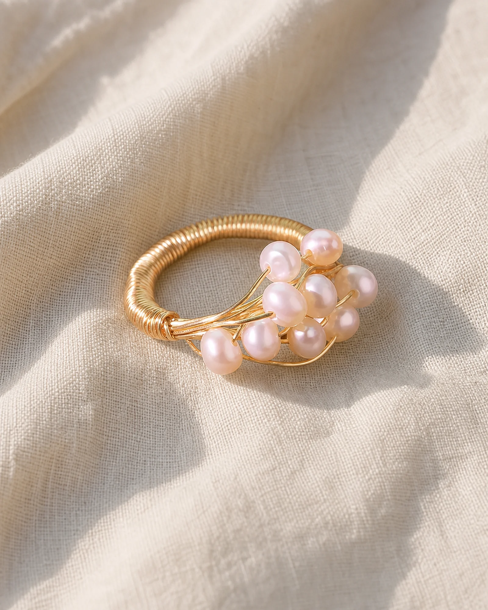
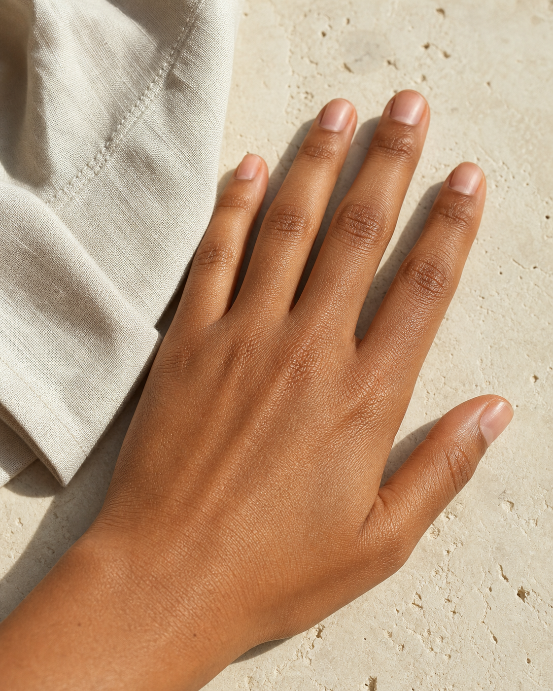

@图1 / 产品身份
珍珠枝线戒指
D:\mythrealms-shop-worktrees\product-imagery\public\preview\director-board-assets\pearl-ring-15s\product-pearl-ring.webp
只传递珍珠簇、金属枝线、缠绕结、密绕环体、材质和比例，不传递原背景。
MythRealms / Director Board 001
一个产品、一个手模、一个场景。三个 5 秒 I2V 镜头分别生成，后期硬切。

@图1 / 产品身份
D:\mythrealms-shop-worktrees\product-imagery\public\preview\director-board-assets\pearl-ring-15s\product-pearl-ring.webp
只传递珍珠簇、金属枝线、缠绕结、密绕环体、材质和比例，不传递原背景。

@图2 / 模特身份
D:\mythrealms-shop-worktrees\product-imagery\public\preview\director-board-assets\pearl-ring-15s\model-hand-linen.png
只传递同一只手、肤色、指甲和白色亚麻袖口；画板全程不露脸、不换手。

@图3 / 场景身份
D:\mythrealms-shop-worktrees\product-imagery\public\preview\director-board-assets\pearl-ring-15s\scene-cafe-terrace.png
只传递石灰石桌面、陶瓷杯、常春藤、下午暖阳与叶影，不传递其他人物或产品。
产品锁珍珠簇、枝线、缠绕结和密绕环体不得增减或重排。
佩戴锁只戴左手无名指近节，珍珠枝始终位于手背。
模特锁同一深肤色左手、同一指甲、同一白色亚麻袖口。
场景锁同一露台、桌面、杯子、暖阳方向和叶影节奏。